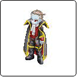

|
|
| 阿奴比斯 |
| 埃及人所信仰的幽冥死神、阿奴比斯，是个狗头人身的神�o，专责埋葬与制造木乃伊，被称为金字塔的守护神，同时也是阴间之神、奥西利斯的引路者。埃及人相传只要人死后就会透过阿奴比斯的指引、来到奥西利斯的面前，死者必须努力证明自己生前是清白无辜的，于是便将心脏交给阿奴比斯秤量，左边天秤盘放着死者之心、右边天秤盘放着象征正义的羽毛，如果心脏重于羽毛，死者就会被奥西利斯判往地狱、交给魔鬼带走；若羽毛重于心脏的话，死者就是个无过错的好人，将会被阿奴比斯带往阴间的乐土居住，获得永生。而这整个过程就是埃及神话里有名的「死者审判」，阿奴比斯的身份象征、也由此可证了。 | |
|
|
| 梅杜莎 |
| 希腊神话中著名的大妖怪、梅杜莎，具有石化的能力，相传是所有妖怪的祖先，也是果尔刚三女妖的么妹。原本都是美丽女子的她们、只因为犯了大罪，而被天神变成妖怪，三女妖其中两个是不死的，生有双翼及锐利的爪子，另外一个跟人一样也会死的、就是梅杜莎了，身为人类时候的她因为烦恼太多、感情太乱；被打成妖怪后、她便将满头的长发变成蛇，让自己的耳边只能听到蛇的嘶声，想藉此忘却烦恼。尽管如此，成为妖怪后的她一样老是皱紧双眉，好像永远在悲哀和苦恼中，最后被正义女神、阿西娜的使者、柏修斯所杀。 | |
|
|
| 巨蟹大帝 |
| 眼尖的玩家们应该都可以知道巨蝎大帝的由来吧，巨蝎大帝也是一个埃及传奇下的产物。据传生前的巨蝎大帝是个正义感强烈、个性火爆的勇士，却因为出身卑微、背景寒酸而遭遇种种挫折，迟迟无法与所爱的贵族女子结合，最后更为了保护自己所爱的女子而丧命，死后的巨蝎大帝无法接受自己生前的命运，便与掌管黑暗和沙漠之神，签下守护沙漠宝藏的契约，与魔蝎融合、获得永生的力量。从此之后便埋身于沙漠中有宝藏的地底或是金字塔中，狙击那些想要盗墓或是盗宝的贪心者。对男性格杀勿论、却从不伤害女性的巨蝎大帝，似乎一直在等待着什么样的机会、可以一偿宿愿呢？ | |
|
|
| 基德 |
史上著名的海盗船长，有好几位。其中以“海盗之王”基德船长的名字在电影、小说、漫画里的曝光率最高。
众多海盗之中，基德船长的名气之所以这么“旺”，他那破碎的藏宝图功不可没！
1696年12月，他在半推半就下拿着袭击法国船只的“民船委任状”和国王颁布的委任书，乘坐“冒险”号扬帆而去了！
接下来的日子，基德成了马达加斯加和马拉巴海岸之间的“海上恶魔”。不消两年的时间，他就积聚了巨额的珍宝。1700年2月16日，基德船长误信了贝洛蒙特的承诺，并把可以证明自己清白的文件交给他，登陆时就被人以“大不列颠国王陛下的犯人”名义带回伦敦，来年即走上绞刑台，结束了这位大海盗的传奇一生。 | |
|
 |
| 德古拉伯爵 |
1897年，爱尔兰作家著作了一部名为《德古拉》的小说。故事是以罗马尼亚著名的弗拉德三世?蓝本，而地点则是以罗马尼亚的特兰西瓦尼亚?背景。
虚构人物德古拉伯爵的原型就是弗拉德?德古拉王子，绰号弗拉德?特佩斯，是罗马尼亚历史上最著名的人物之一。
德古拉，意为恶魔之子或龙之子，为他带来这个外号的原因是他惯用严酷刑罚。弗拉德习惯把犯人毫不留情地钉死在削尖的木桩上，而且他频繁用刑，不管是抓到的外国间谍、战俘，还是国内的窃贼、贪官，就是教士背后说人坏话也要受严刑。这难免得罪相当多人。
可是这些严刑酷罚也将当时的罗马尼亚变成了一个团结、强大的国家。可惜好景不长，1462年弗拉德战死（一说是被反对者谋杀），年仅31岁。在人们眼中，弗拉德的形象变成了一个白天睡在棺材里，晚上出来活动，专咬人的脖子的吸血鬼，他居住的布朗城堡也就变成了吸血鬼的老巢。 | |
|
|
| 海龟 和 幽灵船 |
| 除了上述的BOSS级角色之外，在本次的数据片中、我们也加入了几个比较具有神秘感的NPC唷，想了解它们有些什么样的特殊作用吗？赶快进入黑暗的禁咒中一探究竟。 | | |